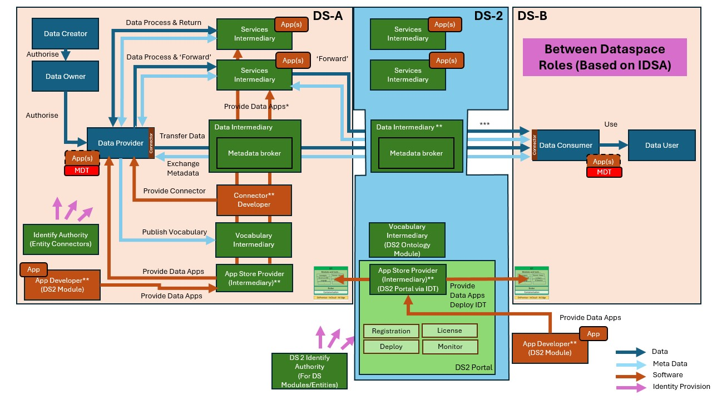
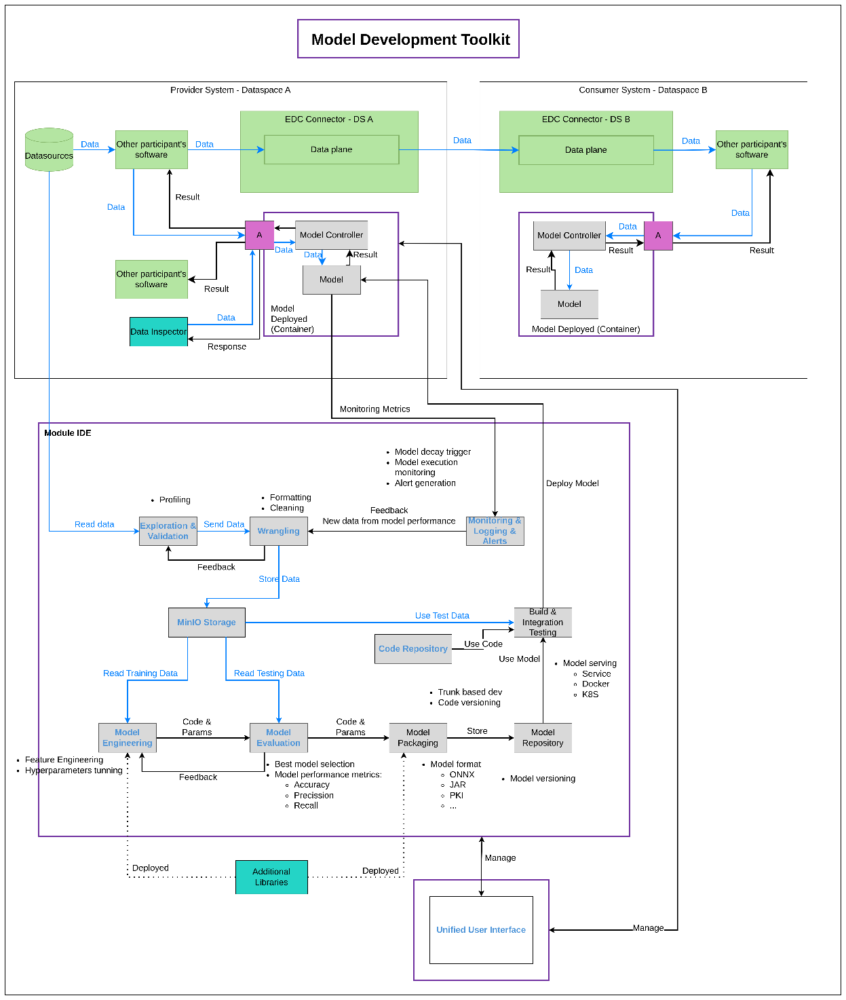
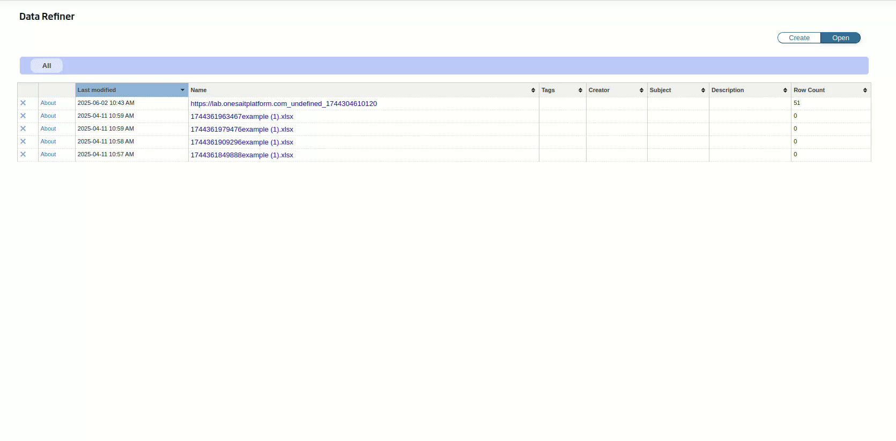
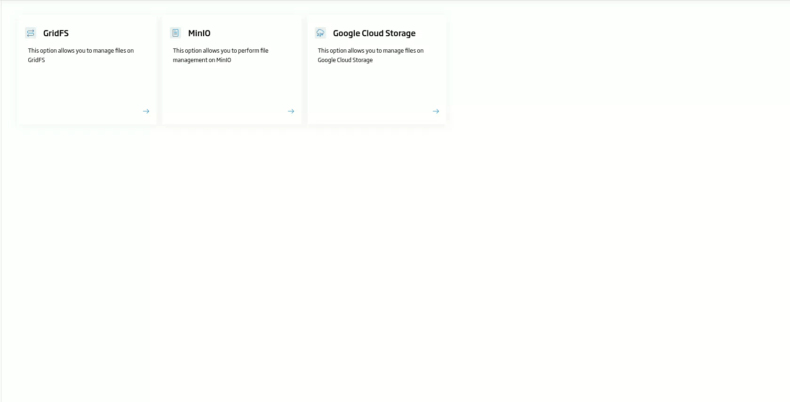

Model Development Toolkit (MDT)
| Project Links |
|---|
| Software GitHub Repository https://github.com/ds2-eu/mdt_module.git |
| Progress GitHub Project https://github.com/orgs/ds2-eu/projects/32 |
General Description
The main purpose of the DS2 Model Development Toolkit Module (MDT) is to provide a set of tools to allow the users to develop Algorithms based on the CRISP-DM standard to assist in the whole development cycle (training, test, etc.) and package the algorithms which can be deployed as executable software component.
MDT provides a suite of integrated tools to develop algorithms that adhere to CRISP-DM, a widely accepted methodology for data mining projects. It includes features for understanding the business objectives and the data that are the focus of the analysis. It offers tools for preparing datasets from raw data, developing, and training models, and testing them. It allows packaging models as containers with a REST API for easy deployment and integration into other systems. Additionally, it provides monitoring capabilities to evaluate the performance of the models in runtime when deployed. The module supports the use of external libraries for data analysis and comes with preloaded libraries that are particularly useful for anomaly detection.
Architecture
The figure below represents the module fit into the DS-DS environment. 
The figure below represents the actors, internal structure, primary sub-components, primary DS2 module interfaces, and primary other interfaces of the module. 
Component Definition
- Module IDE: This set of components provides all the functionality needed to develop data models and algorithms during design time.
- Exploration & Validation: This component allows visual exploration and profiling of data by analysts. It incorporates aspects of the Onesait Platform’s profiling and dashboard engine components, which will be extended to enhance profiling and tagging of input data. It supports structured data in various formats (CSV, JSON, XML, etc.) as well as non-structured data such as text, images, and video. This module read data from the repositories directly. It supports the most used technologies as SQL database, MongoDB, S3, FTP, etc. This component temporally stores the data in a staging area. This component together with Wrangling component help to create datasets for training.
- Wrangling: This component enables the definition and execution of rules to clean data of malformed or undesirable values. It leverages an existing component from the Onesait Platform, based on the Open Refiner open-source project, which is useful for structured data. Additional development will be required to handle non-structured data. The Wrangling component can process data in the staging area of the Exploration & Validation module. Both modules collaborate to define datasets for training. Once the cleaning and formatting process is complete, the resulting dataset is stored in the Minio Storage component.
- Monitoring, Logging, & Alerts: Provides real-time monitoring and data visualization, including functionality for creating dashboards to track request flows and performance issues in model execution. It also defines alerts for detecting anomalous behaviour during model execution and is based on the Grafana software stack. Key tasks include creating monitoring dashboards, defining alerts, and integrating with the Unified User Interface.
- MinIO Storage: Datasets used for training and testing models will be stored in MinIO object storage. Minimal integration work is needed. The Wrangling component stores the datasets, and MinIO Storage provides them to the components that train and test the models. Any component that requires datasets can request them from MinIO Storage. For example, the Model Evaluation component will request data for validating models.
- Model Engineering: This is used to define and create models, based on two open-source projects. The first is Apache Zeppelin, a web-based notebook to perform interactive data analytics and visualization, supporting multiple programming languages such as Scala, Python, SQL, and more. The second is a tool for defining simple models using SQL language. Some minor enhancements will be necessary for better integration and pre-installed libraries, with additional tools required for picture and video analysis during the project execution.
- Model Evaluation: This component handles the training-evaluation cycle and is based on MLflow, an open-source platform for managing the end-to-end machine learning lifecycle. MLflow enables tracking experiments, packaging code into reproducible runs, and sharing and deploying models across different environments. The main task is to integrate MLflow with the Model Engineering and Model Packaging components.
- Model Packaging: Once a model is ready for production deployment, it will be packaged into a model container with clear interfaces for integration with other systems. This component is responsible for creating such deployable and executable modules.
- Model Repository: Stores model definitions, including versions and metadata about model development, such as historical information about datasets and tests performed in the training process. It also stores the necessary data for building the model, such as libraries and their versions, additional parameters, and more.
- Code Repository: Stores the code required to build the model as a deployable component, based on GitLab software, which provides Git repositories. Only configuration and integration tasks with the Unified User Interface are needed.
- Build & Integration Testing: Defines and executes the construction of models as deployable software. It uses the code provided by the Code Repository together with the Model Repository data to build a software that can be deployed and executed.
- Model Deployed: As well as the containerised model, relevant code, each runtime-deployed model will include the following components:
- Model Controller: Manages the lifecycle of the module at runtime and provides an interface for external applications to use the module.
- Model: Executes the model definition, including all required software dependencies, runtime engines, and libraries for normal module execution.
- Unified User Interface: By interfacing with the other components of the module, this component enables the development of data models and algorithms during design time, as well as the visualization of alerts and monitoring data during runtime. Facilitates the usage and management of all integrated tools, providing single sign-on access to all module components. It is based on the existent Control Panel component of Onesait Platform that will be extended to support all the new capabilities introduced by this module and described in this section.
- Data Inspector: The analysis jobs executed by the T6.2 Data Inspector Module will have the capability to use models created and deployed with MDT. For more details, refer to the T6.2 Data Inspector description.
- Additional Libraries: As part of the execution of T4.2, DIGI will analyse and identify additional libraries to be included and supported for the MDT.
Screenshots




Commercial Information
| Organisation (s) | License Nature | License |
|---|---|---|
| Indra | Open Source | Apache 2.0 |
Top Features
- Model Development: Gather, clean, and transform data for training.
- Storage: Store and manage datasets in MinIO.
- Experimentation: Run experiments and keep a record of all executions.
- Model Packaging: Package trained models into Docker images to facilitate deployment.
- Monitoring and Validation: Track metrics such as accuracy, latency, and throughput to detect when retraining is needed.
How To Install
TBC
Requirements
TBC
Software
TBC
Summary of installation steps
TBC
Detailed steps
TBC
How To Use
TBC
Other Information
TBC
OpenAPI Specification
TBC
Additional Links
Onesait Platform GitHub https://github.com/onesaitplatform/onesaitplatform-cloud